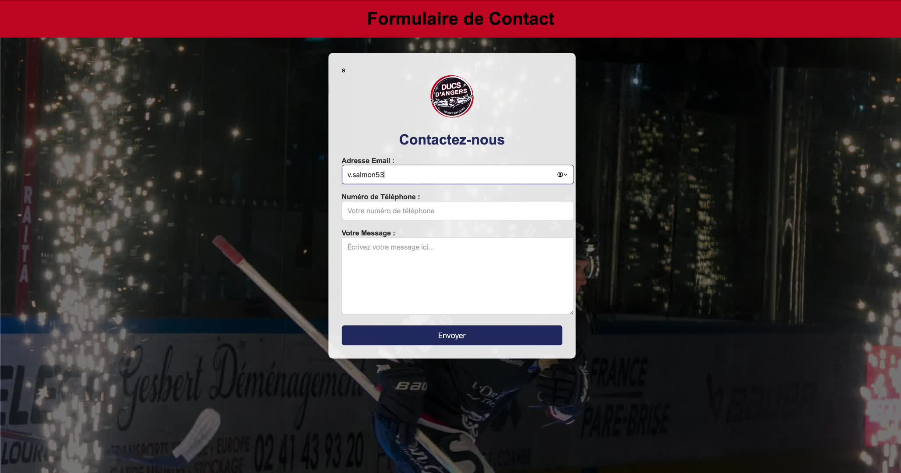
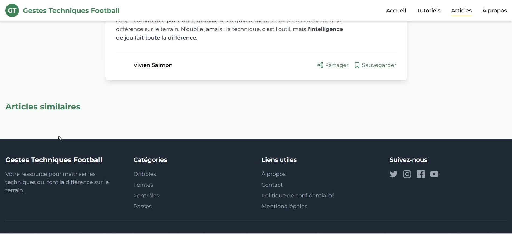

Identités · Presse · Code
Graphisme, Journalisme & Web
Créer pour l'œil et pour l'écran. Identités visuelles, affiches événementielles, +40 articles de presse signés et plateformes web codées en PHP/SQL.
01 — Identité visuelle
Logo personnel “VS”
Conception vectorielle sur Adobe Illustrator. Tracé géométrique épuré combinant les lettres V et S. Adaptable sur fond sombre, clair et en version monochrome.
Adobe Illustrator
Vectoriel
Branding


Annonce des temps forts — Capfun Lila
Social Media

Affiche soirée festive — Animation camping
Print & Affichage
03 — Print & Affichage
Affiches — Comité Handisport Mayenne

Flyer recrutement — Handisport Mayenne
Print

Campagne valorisation du sport adapté
Communication
04 — Presse & Rédaction web
+40 articles parus — Ouest-France & France Bleu
Couverture terrain de la Flamme Olympique Paris 2024, des Boucles de la Mayenne, du Festival Les 3 Éléphants. Interviews sportives, brèves et chroniques. Cliquez pour agrandir.

Ouest-France — Couverture compétition
Presse

Ouest-France — Article print & web
Presse

Ouest-France — Interview exclusive
Presse

Ouest-France — Compte-rendu de match
Presse

Ouest-France — Chronique sportive
Presse

Ouest-France — Reportage en tribune
Presse

France Bleu — Flamme Olympique Paris 2024
Presse

France Bleu — Boucles de la Mayenne
Presse

France Bleu — Festival Les 3 Éléphants
Presse

France Bleu — Article web d'actualité
Presse

France Bleu — Story réseaux sociaux
Presse

France Bleu — Couverture événementielle
Presse

France Bleu — Reportage terrain
Presse

France Bleu — Brève sportive
Presse

France Bleu — Publication numérique
Presse

France Bleu — Focus sur un athlète
Presse

France Bleu — Suivi d'étape cycliste
Presse

France Bleu — Interview radio & web
Presse

France Bleu — Synthèse de saison
Presse
05 — Développement web
Projets interactifs — PHP & SQL

▶
PHP / SQL / HTML5
Plateforme Web — Ducs d'Angers Hockey
Billetterie · Abonnements · Base de données MySQL

▶
Code & Interactif
Guide Interactif des Gestes Football
Animations · Décryptage vidéo · Design pédagogique
Visuels Instagram — Capfun Lila